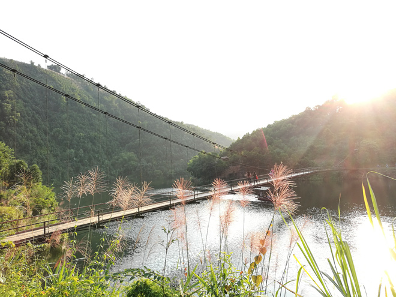
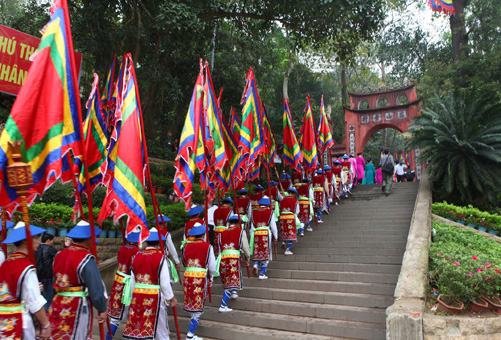
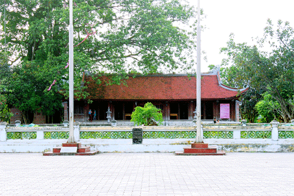
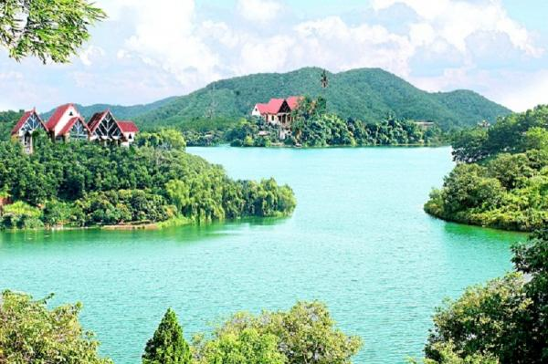
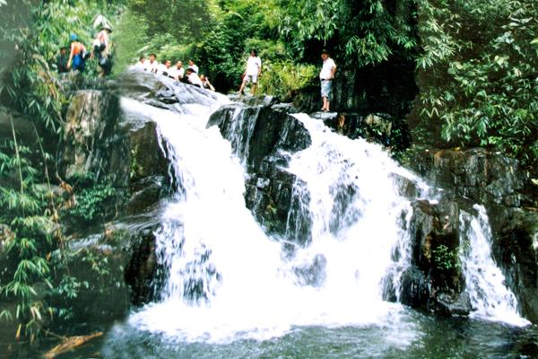
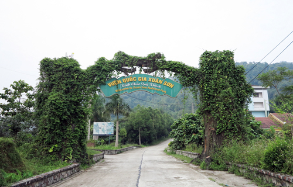
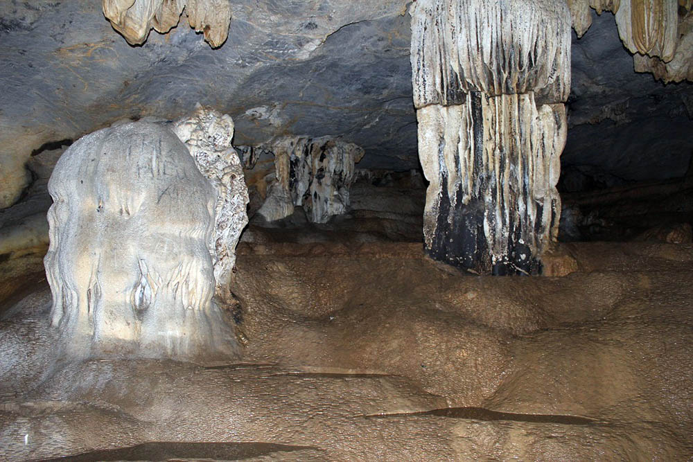

Kính Chào Du Khách !
Về Phú Thọ lễ Tổ đừng quên ghé qua những địa danh bí ẩn đẹp như phim kiếm hiệp
Núi rừng hoang sơ yên bình giống như trong những bộ phim kiếm hiệp là điều bạn sẽ cảm nhận được khi đến những địa danh này của Phú Thọ.
1. Hồ Ly

Non nước hữu tình ở Hồ Ly
Gần đây, giới phượt đang truyền tai nhau về một địa điểm du lịch còn khá mới và hoang sơ, được ví von như “Tuyệt tình cốc” phiên bản Phú Thọ. Đó là hồ Ly, nằm ở xã Thượng Long, huyện Yên Lập.
Từ Hà Nội, xuôi theo Quốc lộ 32 hướng qua cầu Trung Hà khoảng hơn 100km, đến thị trấn Yên Lập thì hỏi đường vào xã Thượng Long. Hồ nằm ở gần cuối xã, đường vào nhỏ, không có biển chỉ dẫn nên khá khó đi.
Tuy nhiên, khi đứng trước vẻ đẹp hùng vĩ của hồ Ly, các bạn sẽ không tiếc công lặn lội đường xá xa xôi, khói bụi để đến nơi đây.
Để đi tham quan lòng hồ, các bạn có thể thuê một chiếc thuyền máy với giá khoảng 100.000 đồng/lượt. Người lái thuyền sẽ đưa các bạn đi một vòng hồ và giới thiệu về từng ngõ ngách, lối di chuyển và từng loại thủy sản của hồ.
Điểm nhấn làm nên sự ấn tượng của hồ Ly đó chính là cây cầu treo bằng sắt. Cầu bắc qua lòng hồ, nối 2 quả núi với nhau. Đứng trên cầu, các bạn có thể nhìn ngắm khung cảnh hùng vĩ của núi rừng, vẻ đẹp hiền hòa của mặt hồ phẳng lặng
2. Đồi chè Long Cốc

Đồi chè Long Cốc nhìn từ trên cao
Không cần lặn lội đến Sơn La xa xôi, ở Phú Thọ cũng có đồi chè đẹp chẳng kém gì Mộc Châu- đồi chè Long Cốc ở huyện Tân Sơn, Phú Thọ
Những đồi chè xanh mướt, trùng trùng điệp điệp, cung đường quanh co nối liền bên sườn đồi tạo nên vẻ đẹp huyền bí khiến bất cứ ai có dịp ghé chơi cũng ngỡ ngàng.
Đến đây, bạn sẽ được đắm mình trong không gian yên tĩnh, không khí mát lành cùng hương gió vấn vương vị thơm thơm, chát chát đặc trưng của chè Long Cốc.
3. Khu di tích đền Hùng

Khu di tích lịch sử đền Hùng
Điểm du lịch nổi tiếng nhất Phú Thọ chính là khu di tích đền Hùng, tọa lạc trên núi Nghĩa Lĩnh, xã Hy Cương, thành phố Việt Trì. Đền được xây dựng vào thế kỷ 15, tương truyền đây là nơi mà người con trưởng của Lạc Long Quân và Âu Cơ lên làm vua lấy hiệu Hùng Vương, đặt tên nước là Văn Lang.
Khu di tích đền Hùng là một quần thể kiến trúc bao gồm đền Hạ và chùa, đền Giếng, đền Trung, đền Thượng và lăng vua Hùng. Nếu có cơ hội đến đền Hùng vào ngày 10/3 âm lịch hằng năm, du khách sẽ được hòa mình vào những nghi thức truyền thống hướng về cội nguồn.
4. Đền Quốc mẫu Âu Cơ

Đền Mẫu Âu Cơ
Để tri ơn công đức Tổ Mẫu Âu Cơ, cách đây hơn 500 năm, thế kỷ thứ XV thời hậu Lê, vua Lê Thánh Tông đã phong thần và cho xây dựng Đền Mẫu Âu Cơ tại xã Hiền Lương - huyện Hạ Hoà. Đền Mẫu Âu Cơ đã được công nhận là di tích lịch sử văn hoá Quốc gia năm 1991.
Mỗi dịp Tết đến, xuân về, nơi đây còn thu hút rất đông du khách đến du xuân, cầu may.
5. Đầm Ao Châu

Đầm Ao Châu Hạ Hòa
Đầm Ao Châu nằm trên địa bàn xã ấm Thượng, xã Y Sơn và xã Phụ Khánh, huyện Hạ Hoà tỉnh Phú Thọ, cách thành phố Việt Trì 80km, cách Hà Nội 150km.
Nằm giữa một vùng đồi thấp, đầm Ao Châu có hình dáng khá đặc biệt. Nhìn trên bản đồ, đầm giống như đầu một con Trâu có hai sừng choãi ra hai phía sông Thao và sông Lô.
Trải qua nhiều năm nơi đây vẫn giữ được vẻ đẹp hoang sơ, bốn mùa nước chẳng bao giờ cạn, luôn giữ được màu xanh trong. Trong hồ có rất nhiều đảo lớn nhỏ và loại cây ăn quả như vải, nhãn, mít, bưởi... đã khiến Ao Châu như một Hạ Long thu nhỏ.
6. Ao Giời – Suối Tiên

Ao Giời – Suối Tiên
Suối bắt nguồn từ núi Nả, một ngọn núi cao nhất của huyện Hạ Hòa và có nhiều thác. Có những thác độ cao đến 20m tạo nên những cảnh quan rất hấp dẫn, có thác đổ xuống những vực nước sâu trong xanh, có thác lại đổ xuống những bãi cuội ngũ sắc lấp lánh tạo nên những vẻ đẹp kỳ ảo cho nơi đây. Đến nơi đây bạn sẽ có cảm giác như lạc trong những bộ phim kiếm hiệp
7. Vườn quốc gia Xuân Sơn

Vườn quốc gia Xuân Sơn
Vườn quốc gia Xuân Sơn nổi tiếng với vẻ đẹp hoang sơ tự nhiên, có hệ sinh thái phong phú và đa dạng. Du khách khi tới đây có thể tận mắt chiêm ngưỡng khu rừng chò trỉ đẹp nhất miền bắc cùng một số loài thực vật số lượng lớn như cây rau sắng, dẻ, mộc lan…
Đến Xuân Sơn bạn đừng bỏ lỡ cơ hội ghé thăm núi Voi, núi Ten, núi Cẩn cùng các con suối như suối Lấp, suối Thang và nhiều thác nước có độ cao trên 50m. Màu thác bạc hoà quyện với màu xanh của rừng già làm cho phong cảnh nơi đây vừa hùng vĩ vừa thơ mộng.
8. Hang Lạng

Hang Lạng
Nếu đã đến Xuân Sơn mà không ghé thăm Hang Lạng thì quả là một thiếu sót lớn. Đây là hang lớn và dài nhất trong số hang động thạch nhũ ở Xuân Sơn, Thanh Sơn, Phú Thọ. Hang Lạng ăn sâu trong lòng núi Ten, có cửa vào hang nhìn thẳng ra cánh đồng Mường Lạng tạo nên khung cảnh huyền bí.